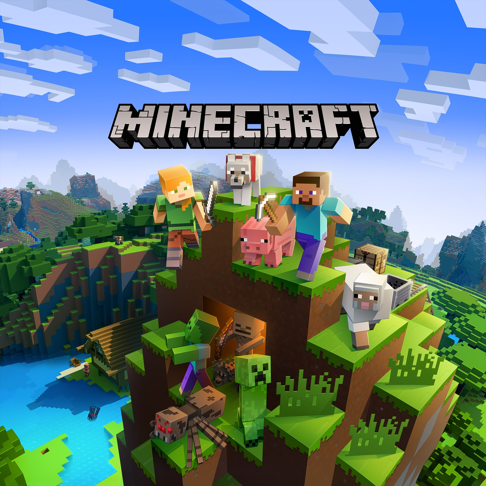
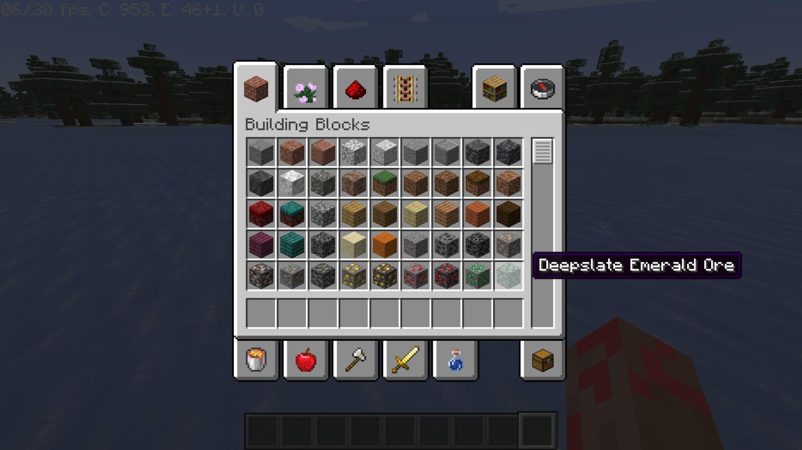

minecraft.exe
Minecraft
Inspiring Creativity with Ambience
Few video game tracks have influenced an entire genre of music as much as Minecraft has done for the ambient music genre. And while Minecraft may have grown out of its indie game phase today, the iconic music that makes up so much of its identity as a game is very much from a time when it was one. Since Minecraft is such an open-ended game, it makes sense that the game’s soundtrack would be similarly laid-back. However, Minecraft’s music is distinct from other ambient music artists at the time, such as Brian Eno and Aphex Twin, in that there is significantly more empty space between notes and musical ideas. While most ambient artists filled up the background of their songs with pads, C418, the composer of Minecraft’s early music, let the silence show through, using relatively few instruments (usually around 3-5). And while most ambient music hangs out around 50-80 BPM, which is already very slow for most music, Minecraft’s music occasionally dips into the 30s and 40s. One of Minecraft’s most iconic tracks, for example, sits at 42 BPM.


Early measures in the song.
As mentioned before, in a game where the world is infinite and the possibilities are limitless for what you can create, the music cannot be particularly intense, necessitating very simple music, even for the ambient genre. The complete control the player has over the game also means that there cannot be many specifically themed tracks at the risk of sounding out of place. Because of this, many of the game’s songs may remain on the same chord or chord sequence. For example, one track sticks to a Cmaj7 chord, consisting of only 4 notes, for its entire runtime, layering a simple background pattern made of the same chord and a melody that sticks to short intervals on the same scale.
Early measures in the song.

While Minecraft does tend to focus somewhat on fighting and exploring in its Survival mode, Minecraft also features a Creative mode, where the player is given flight, invincibility, and infinite resources to be able to build whatever they want. The game has a set of tracks that only play in this mode, and many of them follow the same formula that the last two tracks shown. One in particular highlights this expanded creativity by laying down a Amin7 ostinato that repeats while an synth plays a somewhat sparse melody. Most of Minecraft’s tracks, especially the Survival tracks, have a major key, so this track stands out, being in E minor. This difference, along with the slightly different style, helps to highlight the game’s most creative mode (hence the name).
Early measures in the song.
There isn’t much to be said about Minecraft that already hasn’t been said countless times by many others, and the quality of its music is no exception. There are very few games with soundtracks that induce pure nostalgia in players, even those who haven’t played the game, and there are even less games that have defined a musical space as much as Minecraft has. Despite how the game stands today, an essential part of Minecraft’s legacy will be in its early music.
Minecraft ©2011 Mojang